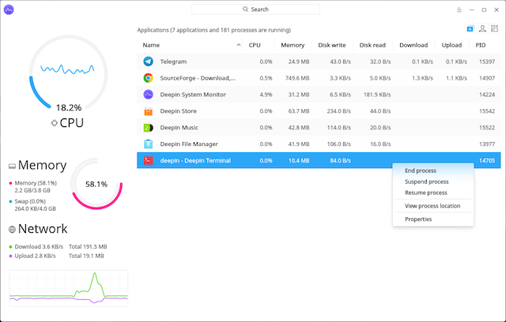

<html>
  <Head>
<meta http-equiv="Content-Type" content="text/html; charset=utf-8">

    
<link rel="stylesheet" href="../static/css/bootstrap.min.css"/>
<link rel="stylesheet" href="../static/css/bootstrap-theme.min.css"/>


    <link rel="stylesheet" href="../static/css/fonts/crmison.css"/>
    <link rel="stylesheet" href="../static/css/fonts/fira_code.css"/>
    <link rel="stylesheet" href="../static/css/fonts/ptsans.css"/>
    <link rel="stylesheet" href="../static/css/katex.min.css"/>
    <link rel="stylesheet" href="../static/css/wiki.css"/>
    <link rel="stylesheet" href="../static/css/codehilite.css"/>

    <script src="../static/js/jquery.min.js"></script>
    <script src="../static/js/bootstrap.bundle.min.js"></script>
    <script src="../static/js/katex.min.js"></script>
    
    

    <title>M1: 打印进程树 (pstree)</title>
  </Head>
  <body>
   
   
<nav class="navbar fixed-top navbar-expand-lg navbar-dark bg-dark">
  <a class="navbar-barnd" href="index.html">Yanyan's Wiki</a>
  <div class="collapse navbar-collapse">
    <div class="navbar-nav">
      <a class="nav-item nav-link active" href="OS2020.html">
        
        操作系统 (2020)</a>
      <a class="nav-item nav-link active" href="SysLab2020.html">
        计算机系统综合实验 (2020)</a>
      <a class="nav-item nav-link active" href="ICS_NJU.html"> 加入我们</a>
    </div>
    <form class="form-inline" autocomplete="off">
      <input id="token-input" type="text" oninput="login();" maxlength="16"
        data-toggle="tooltip" data-placement="bottom"
        title="用于确定身份的作业提交 SHA-1 hash digest。更改后回车或刷新网页生效"></input>
    </form>
  </div>
</nav>

<center>
  <div class="article-container">
    <div class="article">
      <h1 id="m1-pstree">M1: 打印进程树 (pstree)</h1>
<div markdown="1"><div class="fenced fenced-red"><div>
<h4 id="_1">截止日期</h4>
<p>关于实验环境设置、提交方法、评分规则等，请阅读<a href="OS2020_Labs.html">实验须知</a>。获取代码，在 <code>os-workbench</code> 中执行：</p>
<pre class="codehilite"><code>git pull origin M1</code></pre>


<p>Soft Deadline: 2020 年 3 月 15 日 23:59:59。</p>
</div></div></div>

<div plugin="submission(course='OS2020', module='M1')"><div class="accordion submission" id="accordionExample">

  <div class="card">
    <div class="card-header submit-card">
      <form action="../upload.html" method="post" enctype="multipart/form-data">
        <div class="form-row align-items-center">
            <label class="col-form-label">OS2020-M1</label> 提交结果
        </div>
      </form>
    </div>
  </div>


</div></div>

<div markdown="1"><div class="fenced fenced-green"><div>
<h4 id="api">热身问题：用什么样的 API 获取系统中有哪些正在运行的进程？</h4>
<p>从应用角度看，操作系统就是 “一组对象和操作它们的 API 规约”。我们学习编程的过程，其实已经不由自主地使用了很多 API，例如：</p>
<ul>
<li>打开文件会涉及到 <code>open</code> 系统调用 (打开一个操作系统中的文件)；</li>
<li><code>printf</code> 最终会调用 <code>write</code> 系统调用，向编号为 1 的文件描述 (操作系统中的对象) 符写入数据。</li>
</ul>
<p>这些操作系统 API 对我们来说都是自然而然的——但操作系统上并不是所有程序都那么 “简单”，操作系统 API 可以用来实现<strong>任何应用软件</strong>，包括所谓的 “系统软件”。</p>
<p>因此，“获取操作系统中运行的程序” 似乎是操作系统应该为应用程序提供的 API，不然就没法实现任务管理器了。很自然会想操作系统可以提供一个类似迭代器的 API：</p>
<pre class="codehilite"><code class="language-c">Snapshot *CreateProcessSnapshot();
Process *FirstProcess(Snapshot *snapshot);
Process *NextProcess(Process *process);
int ReleaseProcessSnapshot(Snapshot *snapshot);</code></pre>


<p>Windows API 就是这么设计的。不过这么做也会使操作系统 API 的数量<strong>暴涨</strong>，因为所有事情都要通过特定的 API 完成——如果考虑 Windows API 动态链接库导出的符号，那么仅 Kernel 和 GDI 的 Windows API 就在 1,000 个以上。</p>
<p>另一种办法：我们可以在操作系统中创建一个对象 (虚拟的文本文件)，这个文件的内容恰好是操作系统中的进程，例如 <code>/system/process_list</code>:</p>
<pre class="codehilite"><code class="language-text">- pid: 1
  parent: -1
  command: /bin/init
- pid: 2
  parent: 1
  command: /bin/bash</code></pre>


<p>这样我们就可以用 C 的文件操作 API 来获取进程信息了——<strong>我们把操作系统的状态变成了文件系统的一部分</strong>。在这个实验中，我们学习 UNIX/Linux 是如何把操作系统的状态放在文件系统中的。</p>
</div></div></div>

<h2 id="1">1. 背景</h2>
<p>操作系统能同时运行多个程序。大家都用过<a href="https://www.cyberciti.biz/tips/top-linux-monitoring-tools.html">任务管理器</a>——能够显示当前系统运行的状态、进程、处理器占用等等。</p>
<p></img></p>
<p>上图是 Deepin 的任务管理器，除了系统的状态，还可以显示进程的信息。任务管理器当然也是操作系统支持的应用程序，本学期的第一个实验就是实现任务管理器中进程列表的部分。用类似的办法，可以从 Linux 系统中读取出 CPU 占用率、内存使用等信息，你其实就已经获得了实现任务管理器的足够数据。</p>
<h2 id="2">2. 实验描述</h2>
<div markdown="1"><div class="fenced fenced-red"><div>
<h4 id="pstree">实验要求：实现 <code>pstree</code>，打印进程之间的树状的父子关系</h4>
<p>Linux 系统中可以同时运行多个程序。运行的程序称为<strong>进程</strong>。除了所有进程的根之外，每个进程都有它唯一的父进程，你的任务就是把这棵树在命令行中输出。你可以自由选择展示树的方式 (例如使用缩进表示父子关系，这是最容易的)。</p>
</div></div></div>

<p>Linux 系统自带了 <code>pstree</code> 命令，进程树会以非常漂亮的格式排版 (每个进程的第一个孩子都与它处在同一行，之后的孩子保持相同的缩进)：</p>
<pre class="codehilite"><code>systemd─┬─accounts-daemon─┬─{gdbus}
        │                 └─{gmain}
        ├─acpid
        ├─agetty
        ├─atd
        ├─cron
        ├─dbus-daemon
        ├─dhclient
        ├─2*[iscsid]
        ├─lvmetad
        ├─lxcfs───10*[{lxcfs}]
        ├─mdadm
        ├─polkitd─┬─{gdbus}
        │         └─{gmain}
        ├─rsyslogd─┬─{in:imklog}
        │          ├─{in:imuxsock}
        │          └─{rs:main Q:Reg}
        ...</code></pre>


<p>Linux 的 psmisc 中 <code>pstree</code> 的实现大约有 1,300 行，支持多种命令行参数。这个实验里实现最简单的就行。大家可以先玩一下 Linux 的 <code>pstree</code>，使用 <code>man</code> 命令查看 <code>pstree</code> 支持的功能，并试一试。在这个实验中，我们需要实现它的简化版：</p>
<h3 id="21">2.1 总览</h3>
<p><center>pstree [<u>OPTION</u>]…</center></p>
<h3 id="22">2.2 描述</h3>
<p>把系统中的进程按照父亲-孩子的树状结构打印到终端。</p>
<p><code>-p</code>, <code>--show-pids</code>: 打印每个进程的进程号。</p>
<p><code>-n</code> <code>--numeric-sort</code>: 按照pid的数值从小到大顺序输出一个进程的直接孩子。</p>
<p><code>-V</code> <code>--version</code>: 打印版本信息。</p>
<p>在命令行用这些参数执行<code>pstree</code> (如<code>pstree -V</code>、<code>pstree --show-pids</code>) 参考它们的行为。这些参数可能任意组合。</p>
<h3 id="23">2.3 解释</h3>
<p>上述实验要求描述是参照 man page 的格式写出的，其中有很多 UNIX 命令行工具遵守的共同约定 (大家都默认，所以给初学者学习造成了很大的困扰)，例如 <a href="http://pubs.opengroup.org/onlinepubs/9699919799/basedefs/V1_chap12.html">POSIX 对命令行参数有一定的约定</a>，从中摘抄一些约定如下：</p>
<ol>
<li>中括号扩起的参数是可选参数，<code>[]</code> 后的 <code>…</code> 代表参数的 0 次或多次重复。因此 <code>-p</code>, <code>-n</code>, <code>-V</code> 都是可选的参数。</li>
<li>同一个选项可以有不同的名字。在 <code>pstree</code> 中，<code>-p</code> 和 <code>--show-pids</code> 的含义是一样的。</li>
<li>若不另行说明，整数范围在 32 位有符号整数范围内；但如果数值和文件大小有关，则其合法的范围是是 0 到系统最大支持的文件大小 (以后会遇到有数值的参数)。</li>
</ol>
<p>此外，<code>main</code> 函数的返回值代表了命令执行的状态，其中 <code>EXIT_SUCCESS</code> 表示命令执行成功，<code>EXIT_FAILURE</code> 表示执行失败。对于 POSIX 来说，0 代表成功，非 0 代表失败：例如 <code>diff</code> 返回 1 表示比较的文件不同，返回 2 表示读取文件失败 (<code>cmp</code> 的行为也类似)。UNIX Shell 对返回值有<a href="http://pubs.opengroup.org/onlinepubs/9699919799/basedefs/V1_chap12.html">额外的处理</a>。这解释了为什么一些 OJ 会明确要求 main 函数返回值为 0，当返回非 0 时将被认为是 Runtime Error。</p>
<div markdown="1"><div class="fenced fenced-red"><div>
<p><code>main</code> 函数返回非 0 将在 Online Judge 中被判定为 Runtime Error。</p>
</div></div></div>

<p><strong>如果不知道这些约定，使用 Linux/Unix 的时候就会举步维艰。Unix 世界有一套自己定义的 “游戏规则”。</strong>也难怪会有笑话：</p>
<blockquote>
<p>Unix is <em>user-friendly</em> — it's just choosy about who its friends are.</p>
</blockquote>
<p>当然，在渐渐熟悉游戏规则以后就会发现，这套设计简洁好用 (但也有很多人批评它不够优雅)。如果你的目标是用最短的时间把事情搞定，用 Shell 和各种命令行工具的组合一定是你的第一选择，记住：<em>Keep it simple, stupid</em> 和 <em>Everything is a file</em>.</p>
<h2 id="3">3. 正确性标准</h2>
<p>你可以任意选择树的形态，以下输出都是合法的：</p>
<pre class="codehilite"><code class="language-text">systemd─┬─accounts-daemon─┬─
        │
        ...


systemd
 |
 +--accounts-daemon-
 |
 ...


systemd
  accounts-daemon
    ...</code></pre>


<p>只要输出系统中的进程即可；此外，允许进程列表有轻微出入。细心的同学可能发现你第一个版本的 <code>pstree</code> 可能和系统输出不太一样。在线评测会容忍你输出的一些缺陷；此外，作为第一个实验，我们会手下留情，没有非常强劲的测试数据。但你仍然需要确保：</p>
<ol>
<li>正确列出系统中的进程，并正确实现参数组合的行为；</li>
<li>编写可移植的代码。我们会同时测试 32-bit 和 64-bit 的版本。</li>
</ol>
<div markdown="1"><div class="fenced fenced-blue"><div>
<h4 id="hard-test-wrong-answer">在 Hard Test 上 Wrong Answer？</h4>
<p>试一试 <code>pstree -V | less</code>，你会发现小惊喜。我们希望你的行为和系统中的 <code>pstree -V</code> 基本一致：输出到正确的输出流、包含 <code>pstree</code> 的基本信息，但版本描述可以不同。</p>
</div></div></div>

<h2 id="4">4. 实验指南：把大象装进冰箱</h2>
<div markdown="1"><div class="fenced fenced-blue"><div>
<h4 id="_1">想自己尝试？</h4>
<p>鼓励大家忽略下面的教程，自己动手搞定，遇到不明白的地方可以求助 Google (Bing, Stackoverflow, ...)。完成之后可以看一下实验指南，看自己的理解是否有可以改进的空间。</p>
</div></div></div>

<blockquote>
<p>“把大象放进冰箱总共分几步？”</p>
<p>“三步，第一步把冰箱门打开；第二步把大象放进去，第三步把冰箱门带上。”</p>
<p>— 赵本山、宋丹丹《钟点工》</p>
</blockquote>
<p>如果你觉得打印进程树这个问题比较困难，我们也把问题分解一下：</p>
<ol>
<li>得到命令行的参数，根据要求设置标志变量的数值；</li>
<li>得到系统中所有进程的编号 (每个进程都会有唯一的编号) 保存到列表里；</li>
<li>对列表里的每个编号，得到它的的父亲是谁；</li>
<li>在内存中把树建好，按命令行参数要求排序；</li>
<li>把树打印到终端上。</li>
</ol>
<p>因为人的脑容量有限，通常解决问题的办法就是把比较复杂的问题分解成小问题，再把小问题继续分解下去。而在学校里所做的训练就是<strong>建立问题分解的思路和培养解决问题的能力</strong>。</p>
<h3 id="41">4.1. 命令行参数</h3>
<p>获取命令行参数的一小段代码：</p>
<pre class="codehilite"><code class="language-c">#include &lt;stdio.h&gt;
#include &lt;assert.h&gt;

int main(int argc, char *argv[]) {
  for (int i = 0; i &lt; argc; i++) {
    assert(argv[i]); // C 标准保证
    printf("argv[%d] = %s\n", i, argv[i]);
  }
  assert(!argv[argc]); // C 标准保证
  return 0;
}</code></pre>


<p>可以在终端里试试给这个程序传入不同的参数会输出什么，获取命令行参数的。这个问题就算是很好地解决啦：<code>argv[0], ..., argv[argc-1]</code> 就是所有命令行的参数，这是操作系统与 C 程序之间的约定。在 ICS PA 中我们已经知道 getopt (<code>man 3 getopt</code>) 可以处理命令行参数，不过如果你想实际体验一下编程，你也可以自己动手实现 getopt 的功能。</p>
<p>之后会反复编译运行这个程序，所以<strong>编译和测试自动化</strong>非常重要。比较常见的项目组织是编写 Makefile，在命令行中使用 <code>make</code> 实现编译，<code>make test</code> 完成测试。我们已经为大家提供了 Makefile，欢迎大家仔细阅读。IDE 或流行的编辑器 (例如 vscode) 支持使用自定义的 Makefile。</p>
<div markdown="1"><div class="fenced fenced-green"><div>
<h4 id="_1">提示</h4>
<p>回想一下大家做 OJ 题的过程。在编程的过程中，难免会经历修改代码 <math class="inline-math">\to</math> 编译 <math class="inline-math">\to</math> 运行 <math class="inline-math">\to</math> 修改代码……这样的循环。你会选择怎么做呢？新手每次都键入命令 (或者他发现 Ctrl-p 可以重复命令)。</p>
<ul>
<li>之后，有同学人发现，可以把命令写在一行里，比如 <code>gcc a.c && ./a.out</code>，一键就能编译运行了。</li>
<li>再之后会发现可以写个 Makefile (就像这个实验一样)，用 <code>make test</code> 跑完所有测试。</li>
<li>再之后会发现可以每次在文件改动以后自动运行所有测试……有个神奇的命令叫 <code>inotifywait</code>。</li>
</ul>
<p>即便现在有 IDE 和丰富的插件，UNIX 哲学依然是无处不在的 (甚至是这些 IDE 的组成基础)，说得更具体一点，“只要你敢想，就一定能做到”。祝大家编程愉快。</p>
<p>最后，以下两点有助于调试时放平心态：(1) <strong>机器永远是对的</strong>；(2) <strong>未测代码永远是错的</strong>。</p>
</div></div></div>

<h3 id="42">4.2. 得到系统中进程的编号</h3>
<p>进程是操作系统中的对象，因此操作系统一定提供了 API 访问它们。已经剧透过，系统里的<strong>每个进程都有唯一的编号</strong>，它在 C 语言中的类型是 <code>pid_t</code>。不知道这是什么？Google 一把就知道啦。你能找到 glibc 对它的<a href="https://www.gnu.org/software/libc/manual/html_node/Process-Identification.html">官方文档解释</a>。以后遇到问题要自己找答案哦！</p>
<p>操作系统以什么样的方式让你获取系统里的进程呢？之前也提示过：</p>
<blockquote>
<p>Everything is a file.</p>
</blockquote>
<p>一切皆文件，进程信息当然也可以是 “一切” 的一部分。Linux 提供了 <a href="https://en.wikipedia.org/wiki/Procfs">procfs</a>，目录是 <code>/proc</code>。如果你进去看一眼，就会发现除了一些比如 <code>cpuinfo</code> 这样的文件，还有很多以数字命名的目录——聪明的你也许已经猜到了，每个目录的名字就是进程号，目录里存储了进程相关的运行时数据。</p>
<p>可以先玩一会儿，用 <code>cat</code> 可以打印文件的值，可以把文件的内容打出来看看，再对照文档。</p>
<p>现在的问题就变成：怎样得到 <code>/proc</code> 目录下的所有以数字为开头的目录。如果你找对关键字，会发现有很多种方法，一定要自己试一试哦。</p>
<h3 id="43">4.3. 得到进程之间的关系</h3>
<p>procfs 里还有很多有趣的东西，每个进程的父进程也隐藏在 <code>/proc/[pid]/</code> 中的某个文件里。试试 <code>man 5 proc</code>，里面有详细的文档。还有，很多 Online Judge 都使用 procfs 读取进程的运行时间/内存数据。</p>
<p>就像一个普通的文件一样，你可以用你熟悉的方式打开 procfs 里的文件：</p>
<pre class="codehilite"><code class="language-c">FILE *fp = fopen(filename, "r");
if (fp) {
  // 用fscanf, fgets等函数读取
  fclose(fp);
} else {
  // 错误处理
}</code></pre>


<p>procfs 里的信息足够让你写一个非常不错的任务管理器。有兴趣的同学可以试试查看 <code>ps</code> 命令执行的系统调用 (操作系统 API) 执行序列：</p>
<pre class="codehilite"><code class="language-text">$ strace ps
...
openat(AT_FDCWD, "/proc/1/stat", O_RDONLY)           = 6
read(6, "1 (systemd) S 0 1 1 0 -1 4194560"..., 1024) = 190
close(6)                                             = 0
...</code></pre>


<h3 id="44">4.4. 建树和打印</h3>
<p>这是数据结构方面的内容，这门课不会涉及啦。把它当一个 OJ 题就好了——互联网公司很可能会用类似的题目来考察面试者的基本能力。如果你没有头绪，试着定义一个递归函数 <math class="inline-math">f(T) = [s_1,s_2,\ldots,s_n]</math> 把 <math class="inline-math">T</math> 打印成多行文本 (第 <math class="inline-math">i</math> 行是字符串 <math class="inline-math">s_i</math>)。</p>
<ol>
<li>对于叶子节点，直接输出一个格式化字符串 (例如使用 <code>asprintf</code>)；</li>
<li>如果不是叶子节点，对它所有子树 <math class="inline-math">T_1, T_2, \ldots T_k</math> 分别求 <math class="inline-math">f_i(T_i)</math>，得到 <math class="inline-math">k</math> 个多行的文本；</li>
<li>把这些字符串拼到适当的位置，加上一些连接线：</li>
</ol>
<pre class="codehilite"><code class="language-text">(root)─+─T1(line 1)
       | T1(line 2)
       | T1(line 3)
       +─T2(1)
       |
...</code></pre>


<p>然后你会发现你并不需要真的实现 <math class="inline-math">f(T)</math>，而是一遍递归一边打印就行。</p>
<h3 id="45">4.5. 写出正确的代码</h3>
<div markdown="1"><div class="fenced fenced-red"><div>
<h4 id="_1">完成了？</h4>
<p>是时候问问自己：我的程序对吗？</p>
</div></div></div>

<p>虽然在这个实验里，我们的测试用例相对简单；但在未来的实验中，Online Judge 可能会在各种奇葩的条件下运行你的程序哦！除了你们做的 OJ 题中会有复杂的逻辑 (参数的组合) 导致 bug 之外，和系统打交道的编程可有更多的麻烦之处：</p>
<ol>
<li>你的程序遵守 POSIX 的返回值规定吗？如果你的 main 函数返回了非 0 的数值，我们将认为程序报告了错误——在非法的输入上返回 0，以及在合法的输入上返回非 0 都将导致 <span class="badge badge-pill badge-danger">Wrong Answer</span>。</li>
<li>程序够 roubust 吗？它会不会在一些非法的输入上 crash？如果系统里的进程很多呢？如果内存不够了呢？如果 <code>open</code> 或者 <code>malloc</code> 失败了呢？要知道，crash 一般是因为 <a href="https://en.wikipedia.org/wiki/Undefined_behavior">undefined behavior (UB)</a> 导致的——UB 没把所有的文件都删掉真是谢天谢地了。</li>
<li>万一我得到进程号以后，进去发现文件没了 (进程终止了)，怎么办？会不会有这种情况？万一有我的程序会不会 crash……？</li>
<li>进程的信息一直在变，文件的内容也一直在变 (两次 <code>cat</code> 的结果不同)。那我会不会读到不一致的信息(前一半是旧信息、新一半是新信息)？这两个问题都是 race condition 导致的；我们将会在并发部分回到这个话题。</li>
<li>如果我不确信这些事会不会发生，我有没有写一个程序，至少在压力环境下测试一下它们有没有可能发生？嗯，如果我同时运行很多程序，每个程序都不断扫描目录、读取文件，也观察不到这个问题，至少应该可以放点心。</li>
</ol>
<p>随着课程的深入，这些问题都会得到解答。</p>
<p>当你的程序越来越复杂，这些问题也许将会成为你挥之不去的阴影。这就对了——从 Intel 的 CPU 到 Linux Kernel 都有数不清的 bug。你也许听说过 “形式化验证”，但事实也证明，经过验证正确的编译器 (CertComp) 和文件系统 (FSCQ) 都依然存在 bug。</p>
<p>写出正确的代码远比想象中困难——目前地球上还没人能保证复杂的系统没有 bug 和漏洞。我个人热切盼望着没有 bug 的那一天的到来，不过似乎遥不可及。不过也不用太绝望，这门课里会教给大家一些有关 “写代码” 的知识，更重要的是正确的思维方式 (“世界观”)：操作系统会提供什么、该提供什么、不该提供什么、应该怎么提供。</p>
    </div>
  </div>
</center>

<div class="footer-bottom">
  <center>
    <div class="copyright"> © 2020 Yanyan Jiang, All rights reserved </div>
  </center>
</div>


    <script>
      $(function () {
        $('[data-toggle="tooltip"]').tooltip()
      })

      $("math").each(function() {
        var tex = $(this).text();
        var html = katex.renderToString(tex, {
          displayMode: $(this).attr('class') == 'block-math',
          throwOnError: false
        });
        $(this).replaceWith(html);
      });

      function get_token() {
        var match = document.cookie.match(new RegExp('(^| )token=([^;]+)'));
        if (match) return match[2];
        else return "";
      }

      var token = get_token();
      var hint = "token", box = $("#token-input");

      if (token == "") { box.val(hint); }
      else { box.val(token); }

      function login() {
        var token = box.val()
        document.cookie = 'token=' + token + '; expires=Fri, 31 Dec 9999 23:59:59 GMT;';
        if (token == '') {
          box.val(hint);
        }
      }
    </script>
  </body>
</html>